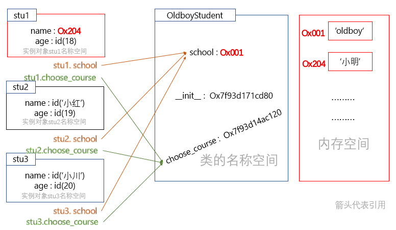

OOP基本
官方文档(很有必要通读一遍 受益匪浅):
https://docs.python.org/zh-cn/3/tutorial/classes.html#a-first-look-at-classes
https://docs.python.org/zh-cn/3/reference/executionmodel.html#naming-and-binding
面向过程与面向对象区别¶
两大编程范式 面向过程 面向对象
☆面向过程编程¶
核心是 过程 二字,过程指的是解决问题的步骤,即先干什么后干什么..
基于该思想编写程序好比在设计一条流水线,是一种机械式的思维方式..
优点: 复杂的问题流程化、进而简单化. 可以精准的预测问题的处理流程和结果.
缺点: 扩展性差
☆面向对象编程¶
核心是 对象 二字, 对象是特征与技能的结合体 .
基于该思想编程的程序就好比是在创造一个世界,世界万物都是对象,你就是这个世界的上帝
要思考什么人能干什么事情,解决这件事的这个人需要具备什么样的特征和技能
优点: 可扩展性强
对于一个软件质量(成本、性能、可靠性...)而言,面向对象的程序设计只是用来解决扩展性的.
缺点:
1>编程的复杂度要高于面向过程
2>面向对象的程序一旦开始就由对象之间的交互解决问题,即便是上帝也无法准确的预测结果.
eg: 游戏对象对战过程中出现的阴霸技能...
应用场景: 需求经常变化的软件,一般需求的变化都集中在用户层, eg: 企业内部软件, 游戏等.
类¶
类: 种类、分类、类别
对象是特征与技能的结合体,类是 一系列(多个) 对象相似的特征与技能的结合体.
强调: 站的角度不同,总结出的类是截然不同的..
类与对象谁先出现呢？
在 现实 生活中: 先有一个个具体存在的对象,然后随着人类文明的发展才有了分类的概念...
在 程序 中: 必须先定义类,后调用类来产生对象...
☆开辟类的命令空间¶
类的本身其实就是一个容器/名称空间 , 用来存放名字的
可以从类的名称空间中增/删/改/查名字
ps: 回顾 -- 在前面函数导入模块那一小节,导一个模块就会造一个名称空间( 模块名指向名称空间 )
从名称空间里往外拽名字,就是.这种语法来搞定的！.后面的统称为属性即python为我们提供专门访问属性(名称空间中的名字)的语法,点后面就是属性
school和choose_course都是OldboyStudent的属性,为了便于阐述,往后我们 私下约定 school是数据属性,choose_course是函数属性... (python是没有数据属性函数属性概念的 我们私下约定的!！)
# -- 类的定义
class OldboyStudent():
school = 'oldboy' # 变量 -- 数据 特征
def choose_course(self): # 方法 -- 功能 技能
print('is choosing course..')
print('>>>>') # 类中可以有任意可执行代码
# -- `.`表明从名称空间中访问属性！ [本质]操作的就是__dict__!!
print(OldboyStudent.__dict__) # 查看类的名称空间 返回的是一个字典！
print(OldboyStudent.__dict__['school']) # oldboy
# <function OldboyStudent.choose_course at 0x7fb28af1c790>
print(OldboyStudent.__dict__['choose_course'])
print(OldboyStudent.school)
# !!类中定义的函数是类的函数属性,类可以使用,但使用的就是一个普通的函数而已.
# 意味着需要完全遵循函数参数规则.该传几个值就传几个值..
print(OldboyStudent.choose_course(123))
# -- 对类的名称空间进行增改删 本质就是操作字典..
# 像这种__dict__开头和结尾都是双下划线的 我们通常不会直接操作 而是满足条件下自动触发
# Ps:在迭代器那里也提到了双下划线..
OldboyStudent.country = 'China' # OldboyStudent.__dict__['country'] = 'China'
OldboyStudent.country = 'CHINA' # OldboyStudent.__dict__['country'] = 'CHINA'
del OldboyStudent.school
"""OldboyStudent.__dict__的结果
{'__module__': '__main__', 'school': 'oldboy', 'choose_course': <function OldboyStudent.choose_course at 0x7fc4a171e790>, '__dict__': <attribute '__dict__' of 'OldboyStudent' objects>, '__weakref__': <attribute '__weakref__' of 'OldboyStudent' objects>, '__doc__': None}
"""
变量名不建议使用驼峰体,类名可以..
从上到下运行代码, 遇到类定义阶段的代码,会立刻执行. 执行会发生什么事？
就上方几行代码的运行而言,会 开辟一个类的名称空间 ,将school和choose_course这两个名字放到里面.
函数不同,函数在调用后,才会开辟名称空间__但凡运行过程中产生了变量名字,要关联想到开辟名称空间
名称空间 -- school:id('oldboy') choose_course:id(choose_course函数) ;
内存 --- 存放真实的数据 eg: 'oldboy'这一字符串.
☆类实例化对象¶
调用类产生对象 ,调用类的过程又称为类的 实例化 . 实例化的结果称为类的对象/实例.
调用类会得到一个返回值,该返回值就是类的一个具体存在的对象/实例
# 将类比喻成一个工厂,调用一次类就下发一个生产指令,产生一个对象
# stu1 stu2 stu3是三个对象 id不一样
stu1 = OldboyStudent() # <__main__.OldboyStudent object at 0x7fd993f1da90>
stu2 = OldboyStudent() # <__main__.OldboyStudent object at 0x7fd993f1daf0>
stu3 = OldboyStudent() # <__main__.OldboyStudent object at 0x7fd993f1dac0>
灵魂三问:
1> 类的实例化过程中发生了哪些事?
2> 通过实例化造的stu1、stu2、stu3三个对象全都一样,对象是除了有相似的特征与技能以外,还应该有自己独有的特征,那如何在实例化的过程中为对象定制自己独有的特征？
3> 程序中的对象到底是什么,如何使用？
Q:OldboyStudent() 类加括号是运行类中的代码？
A: 错！！ 类中的代码在定义阶段就执行啦..
实例化对象¶
实例化的一个个对象本质上就是一个个名称空间(放名字的!)...
对象的名称空间 是用来存放对象自己 独有的 名字\属性类中存放的是对象们共有的属性,其中包含数据属性和函数属性.
__init__不是用来造对象的,是用来初始化对象的. 是在类造完空对象后才触发的.
☆__init__¶
1> 创建实例化对象 后 ,为它定制独有的特征..
class OldboyStudent():
school = 'oldboy' # -- 数据属性
def choose_course(self): # -- 函数属性
print('is choosing course..')
# -- 开辟出两个独立的名称空间 stu1 stu2
stu1 = OldboyStudent()
stu2 = OldboyStudent()
# -- 为实例化对象定制独有的特征
stu1.name = '小明'
stu1.age = 18
stu2.name = '小红'
stu2.age = 19
"""
def init(obj,x,y):
obj.name = x
obj.age = y
init(stu1,'小明',18)
init(stu2,'小红',19)
"""
# -- 查看stu1和stu2名称空间里的名字
print(stu1.__dict__) # {'name': '小明', 'age': 18}
print(stu2.__dict__) # {'name': '小红', 'age': 19}
# -- 类的名称空间中存放的是对象们共有的属性
print(OldboyStudent.school) # oldboy
print(stu1.school) # oldboy
print(stu2.school) # oldboy
2> 实例化的 过程中 ,定制对象独有的特征.
调用类 OldboyStudent() 产生对象过程中发生了两件事:
step1:调用类创建了一个空对象 '空的名称空间' {}
step2:自动触发类中__init__功能的执行, 将空对象传给self参数
因而调用类时仅需传入x,y两个参数 self参数不用传,python自动帮我们传啦.
注意哦, __init__ 方法内可以有任意的python代码,但一定不能有非None的返回值！！
class OldboyStudent():
school = 'oldboy'
# -- 会在调用类时自动触发 初始化方法__init__
def __init__(self, x, y):
self.name = x # stu1.name = '小明'
self.age = y # stu1.age = 18
def choose_course(self):
print('is choosing course..')
stu1 = OldboyStudent('小明', 18) # OldboyStudent('stu1','小明',18)
print(stu1.__dict__) # {'name': '小明', 'age': 18}
☆属性查找¶
先从对象自己的名称空间找, 没有则去类中找, 若类中也没有, 则报错
[小插曲] 用代码实现记录一共实例化的次数.
分析: 这样思考 所有的对象都看得到的且值都是一样的,这得是个类属性.
class OldboyStudent():
school = 'oldboy'
count = 0
def __init__(self, x, y):
self.name = x
self.age = y
OldboyStudent.count += 1 # !!!(´▽｀)
stu1 = OldboyStudent('小明', 18)
stu2 = OldboyStudent('小红', 19)
print(stu1.count) # 2
assert stu1.count is stu2.count is OldboyStudent.count
OldboyStudent.count = 11 # -- 类的数据属性被修改了..
stu3 = OldboyStudent('小川', 20)
print(stu1.count, stu2.count, stu3.count, OldboyStudent.count) # 12 12 12 12
☆绑定方法¶
类名称中定义的数据属性和函数属性都是共享给所有实例化对象用的
对象名称空间中定义的 [只有] 数据属性 ,而且是对象独有的数据属性,只有实例化对象自己可以看见.
类中定义的函数是类的函数属性,类可以使用,但使用的就是一个普通的函数而已.
意味着需要完全遵循函数参数规则.该传几个参数就传几个参数.
类中定义的函数是可共享给所有对象的. 实例化对象也可以使用,而且是以绑定的方式给对象用
[绑定的效果] eg: 绑定给stu1,就由stu1来调用,调用时会将stu1当作第一个参数自动传入
Ps: __init__是在调用类时自动触发,实则也是触发了一个绑定方法执行,self才会自动传入.

class OldboyStudent():
school = 'oldboy'
def __init__(self, x, y):
self.name = x
self.age = y
def choose_course(self,x):
print('%s正在选课' % self)
stu1 = OldboyStudent('小明', 18)
stu2 = OldboyStudent('小红', 19)
stu3 = OldboyStudent('小川', 20)
# 类访问 -- function方法
# <function OldboyStudent.choose_course at 0x7fcac28599d0>
print(OldboyStudent.__dict__['choose_course'])
# <function OldboyStudent.choose_course at 0x7fcac28599d0>
print(OldboyStudent.choose_course)
# 对象访问 -- bound method绑定方法
# <__main__.OldboyStudent object at 0x7fcac285aa90> !!!
print(stu1)
# <bound method OldboyStudent.choose_course of <__main__.OldboyStudent object at 0x7fcac285aa90>> !!! 指明了绑定到哪个方法,以及哪个对象去绑定..
print(stu1.choose_course)
# <class '__main__.OldboyStudent'>
print(OldboyStudent)
print(hex(id(OldboyStudent))) # 0x7fcac28599d0
# 7fcac286b0f0
print('%x' % id(OldboyStudent.school))
print('%x' % id(stu1.school))
print('%x' % id(stu2.school))
"""
先明白一点 `对象.方法`访问到的是方法的内存地址 `对象.方法()`方法运行
很神奇啊,`实例化方法.类中的方法`的id居然跟`类.同一方法`的id不一样..
有一种解释是这样的:
实例化对象后,Python编辑器会将类方法的对象重新使用描述器包装一下,然后存储到一个新的内存空间,在调用的过程中,Python内部会对Person.__dict__['choose_course']做一次拷贝,所以我们相当于调用的只是方法的副本.
Python采用的是垃圾回收的机制,当一个内存,没有对象对其引用的话,就会立刻销毁这块内存然后对其复用.
obj = stu2.choose_course 是为了防止编译器对choose_course立刻销毁
"""
print(hex(id(OldboyStudent.choose_course))) # 0x7fcac28599d0
print(hex(id(stu1.choose_course))) # 0x7fcabf65dc80
print(hex(id(stu2.choose_course))) # 0x7fcabf65dc80
obj = stu2.choose_course
print(hex(id(obj))) # 0x7fcabf65dc80
print(hex(id(stu3.choose_course))) # 0x7fc654f1bf80 不一样啦！
"""
不想纠结了(￣O￣;)..粗略的就不看id.简单的理解就是指向同一个对象,只不过底层内部的过程有点曲折..
"""
# 将stu1对象传给了choose_course的self参数
# 下面两个写法效果一致..
stu1.choose_course(123)
OldboyStudent.choose_course(stu1,123)
绑定方法与函数的区别:
简单来说, 函数正儿八经的该传几个值传几个值;绑定方法第一个参数不用传,会将绑定者自动传进去...
类来调用就是普通函数, 实例化对象来调用就是绑定方法.
小结¶
类对象、实例化对象就是一个存数据/属性的容器！
对象 -- 名称空间 -- 放名字 -- 名字:id(数据) -- 数据'也称x作属性'
对于类对象而言, 属性 = 数据属性 '即特征' + 函数属性 '即功能' 这些属性是实例化对象共享的.
对于实例化对象而言,属性就是自己独有的特征. 实例化对象可以调用类对象中的属性.
扩展开来讲,得到一个实例化对象,不仅得到一堆数据属性(自己独有的+类对象里的),还能得到专门处理这些数据属性的方法(类对象里的函数属性)！
注意哦,到目前为止,类里面的函数属性只涉及到了带有self参数的方法.
所以,我们在这里可以说(严谨一点),类对象里的函数属性就是实例化对象的 绑定方法 .
实例化对象调用绑定方法会将实例化对象自动传入,作为self参数的值
☆类就是类型¶
举个栗子: 在python3中统一了类与类型的概念, 类就是类型
常见的类型: 字符串 元祖 列表... 内置函数 type(obj) 可以查看该对象属于哪种类型.
class Foo: # 自定义的类 或说是 自定义的数据类型
def func1(self, x):
print('绑定方法..')
f = Foo()
print(f) # <__main__.Foo object at 0x7f98df9c7ee0>
print(type(f)) # <class '__main__.Foo'>
f.func1(123) # 绑定方法.. -- 可以写成 Foo.func1(f,123)
Foo.func1(f, 123) # 绑定方法..
>>> list # -- 类型list就是类list
<class 'list'>
# -- 可以写成my_list = list([1,2,3])
# 即类list实例化了一个名为my_list的对象
>>> my_list = [1,2,3]
>>> type(my_list)
<class 'list'>
>>> other_list = [4,5,6]
"""
实例化对象my_list还有专门操作列表数据类型的一系列方法
eg:往my_list列表里加一个值`4`,该值加到的是my_list这一列表中,而不是other_list列表
再次验证说明,[绑定方法绑定给谁,就应该由谁来调用,谁来调用就操作的是谁.]
"""
>>> my_list.append # -- my_list的绑定方法append 会自动传值
<built-in method append of list object at 0x7fd8aaf7d8c0>
>>> my_list.append(4) # -- 可以写成list.append(my_list,4)
专门用于检查数据类型的方法: isinstance, 充分体现了python处处皆对象!
# -- isinstance(obj,cls) 检查obj是否是类 cls 的一个实例
# -- issubclass(sub, super) 检查sub类是否是 super 类的派生类/子类
class Foo:pass
class Sub(Foo):pass
obj = Foo()
print(isinstance(obj, Foo)) # True
print(issubclass(Sub, Foo)) # True
print(issubclass(Foo, object)) # True
print(issubclass(Sub, object)) # True
# -- python3中统一了类与类型的概念
d = {'x': 1} # -- 本质上是 d = dict({'x':1})
print(isinstance(d, dict)) # -- 不建议用`type(d) is dict`来判断
☆数据与功能的整合¶
程序 = 数据 + 处理数据的功能; 程序使用功能运作起来,就是一系列的数据在发生变化.
面向过程中的函数 将程序的功能进行了整合.. (数据没有整合)
面向对象中的实例化对象 将数据以及专门处理这堆数据的功能作了整合.. (整合程度进一步升级)
比如: 给一个列表,得到的不仅仅是列表数据, 还有append insert等等绑定方法.
强调!!! 实例化对象是一个高度整合的产物,整合数据( 自己独有的+与其它实例化对象共有的 )与专门操作该数据的方法[ 该方法称为绑定方法 ]！
具体演变如下:
# --- 1.在面向过程中,数据与功能是分离的！
# fun1和func2都会用到a,b,c变量的值
def func1(a, b, c, sql):
print(a, b, c, sql)
def func2(a, b, c, host):
print(a, b, c, host)
""" 每次调用都要重复传入一些参数..
用默认参数解决??一个函数的参数经常会用到某一参数值时才会为该参数设置为默认参数
为两函数都设置默认参数？？不妥 这不还是在做重复操作嘛！
正确打开方式:定义全局变量 func1,func2就可以共用a,b,c啦
"""
func1(1, 2, 3, 'select * from tb3;')
func2(1, 2, 3, '192.168.0.1')
# -- 2.定义全局变量
# fun1和func2都会用到a,b,c变量的值
# fun3和fun4都会用到d,e变量的值
a, b, c = 1, 2, 3
d, e = 44, 55
def func1(sql):pass
def func2(host):pass
def func3(xxx):pass
def func4(yyy):pass
"""
a,b,c的本意是只给func1和func2用,但fun3,fun4也能访问的到
同理d,e的本意是只给func3和func4用,但fun1,fun2也能访问的到
因为这些全局变量,并不隶属于某几个功能,能被所有功能使用
所以这些全局变量全部耦合在一起,没有做区分.整合程度仍然不高,解耦合程度不高,
"""
func1('select * from tb3;')
func2('192.168.0.1')
# -- 3.类
# 实例化对象是一个高度整合的产物,整合数据与专门操作该数据的方法！
class Foo:
def __init__(self, a, b, c):
self.a = a
self.b = b
self.c = c
def func1(self, sql):
print(self.a,self.b,self.c,sql)
def func2(self, host):
print(self.a,self.b,self.c,host)
class Bar:
def __init__(self, d, e):
self.d = d
self.e = e
def func3(self, xxx):
print(self.d,self.e,xxx)
def func4(self, yyy):
print(self.d,self.e,yyy)
foo = Foo(1, 2, 3)
foo.func1('select * from tb3;')
foo.func2('192.168.0.1')
bar = Bar(44, 55)
bar.func3('(´▽｀)')
bar.func4('(￣▽￣)')